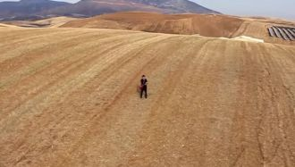

Давно решил, что не влюблюсь я больше никогда. И тут, явилась ты, мой котик, котик, котик, котик. Был не зависим, а сейчас так скучно без тебя,
Дин, дон, дили-дон, Что за странный перезвон? Слышен он со всех сторон: Дили, дили, дили-дон!
Слышу голос из Прекрасного ДалекаГолос утренний в серебряной росеСлышу голос и манящая дорогаКружит голову как в детстве карусель
Месяц над водой, отражается.Звёзды над землей рассыпаются.Тихо напою: «Баю-баю!» -Песенку свою колыбельную.Нари-о-да.О. Нари-о...
When your legs don't work like they used to beforeAnd I can't sweep you off of your feetWill your mouth still remember the taste of my love
He said let's get out of this townDrive out of the cityAway from the crowdsI thought heaven can't help me nowNothing lasts forever
Finding your way in the dark, ain't so hard when you're close to my heartYou are there when I'm feeling aloneAll I need is for you to come home
Рiдна мати моя, ти ночей не доспала.I водила мене у поля край села,I в дорогу далеку ти мене на зорi проводжалаI рушник вишиваний на щастя дала.
Дуне т1а мел йоаккха хаХьона йоаккха аз.Аз мел доаха саХьона доах аз.Д1а мел оала дош хьона оал,Са нана, хьо йоацаш йоахалургьяц.
Привет, привет, привет.. Любовь.Поверь, я хочу быть с тобой,Когда ветер стирает холодную ночь.В венах моих нагревается кровь

Εχω αντιρρηση να προσπαθησω γνωμη ν'αλλαξειςγεγονοτα οπως πρώτα ψυχραιμα να κοιταξειςΔιχως κατι να σε δενει πλεον αλλο μαζί της
Ton regard oblique En rien n'est lubrique Ta maman t'a trop fessé Ton goût du revers N'a rien de pervers Et ton bébé n'est pas fâché
Another day has goneI'm still all aloneHow could this beYou're not here with meYou never said goodbyeSomeone tell me why
Be my woman girl, I'll be your manBe my woman girl, I'll be your man
You're the light, you're the nightYou're the color of my bloodYou're the cure, you're the painYou're the only thing I wanna touch
Dear future husband,Here's a few thingsYou'll need to know if you wanna beMy one and only all my life
"All About That Bass" lyricsMEGHAN TRAINOR LYRICS"All About That Bass"
Sipping on rosé, sipping on sun, coming up all lazySlow cooking pancakes for my boy, still up, still fresh, as a daisy
There's a stranger in my bed,There's a pounding my headGlitter all over the roomPink flamingos in the poolI smell like a minibar
Oh no, did I get too close?Oh, did I almost see what's really on the inside?All your insecurities,All the dirty laundry